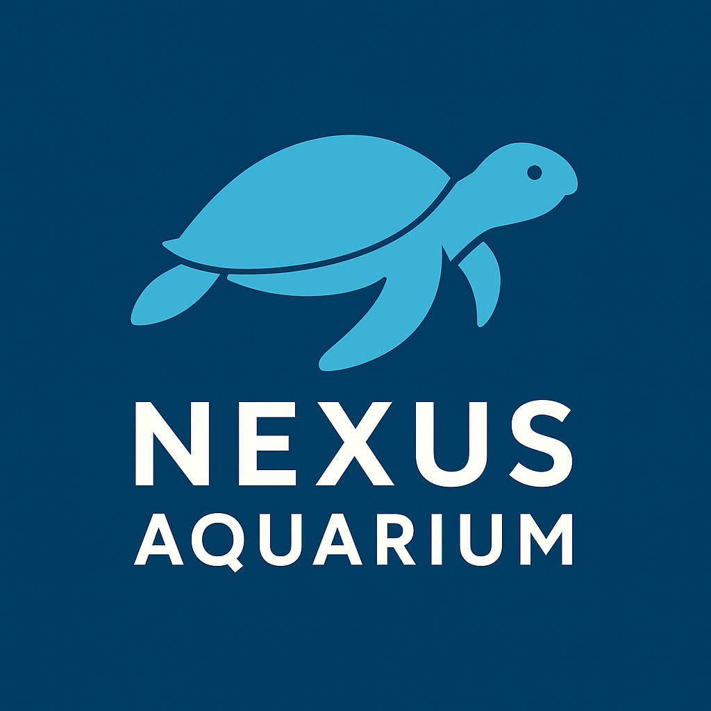
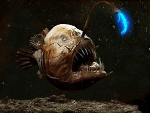
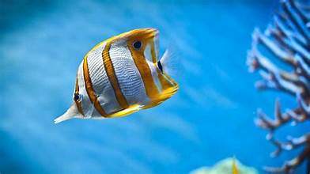
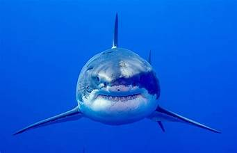

Welcome to Nexus Aquarium:-
Join us in the exciting world of programming and turn your ideas into reality. Unlock the world of endless possibilities - learn to code and shape the digital future with us.

Species of Fish:-

Blue Fish

Beta Fish

Angler Fish

Butter Fish

Sand Fish

Goby Fish

Shark

Red Drum